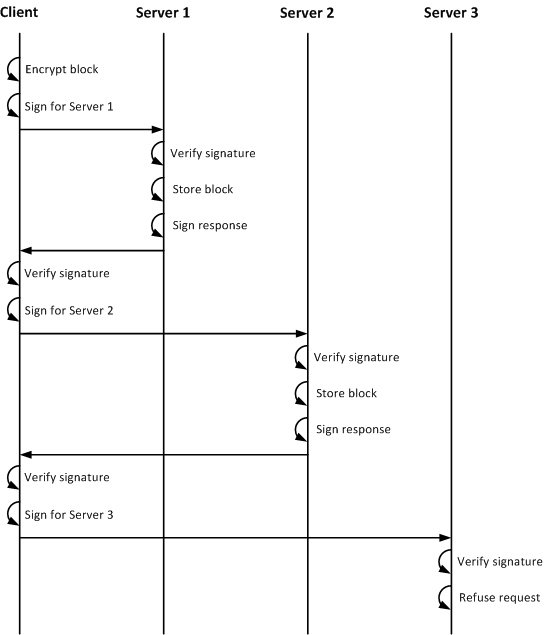
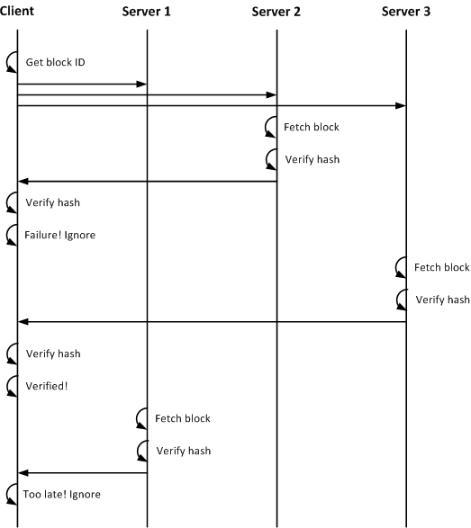
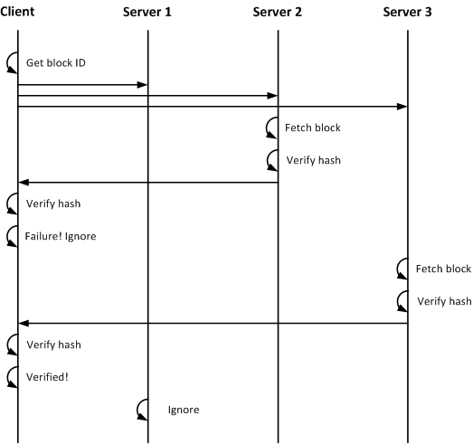

: Protocol Overview: Protocol Overview
: Protocol Overview: Protocol OverviewThis document explains some of the protocol interactions between an Octavia client and its server(s). It is not yet complete, and many possible scenarios are not yet documented.
To store a file, the Octavia client breaks the file up into fixed-size blocks. (The last block may not be a full block in length.) Octavia encrypts the block, and then calculates a cryptographic hash on the ciphertext of the block. This hash is the block ID. The client then uses its signing key(s) to sign storage requests, and sends the requests to servers. Because the client may have different signing key relationships with different servers, it may have to formulate and sign several requests.
Servers verify the signature, which allows them to know whether the client is authorized to store blocks. The server can apply any policy at this time, such as space usage quotas, random denial, et c. If the server agrees to store the block, it crafts and signs a storage response with the same key, and sends the response to the client. If not, it does not send any message.
Clients may ask any number of servers for a block they need, and those servers can choose to respond or not on any schedule they like. The client may choose to ask many servers all at once, and use the response of the first server to respond correctly. Clients check that the has of the incoming block contents match the requested block ID, and simply ignore invalid responses.
Servers may also ignore block retrieval requests. Clients anticipate this and either ask many servers, or ask the same or other servers after a timeout.
